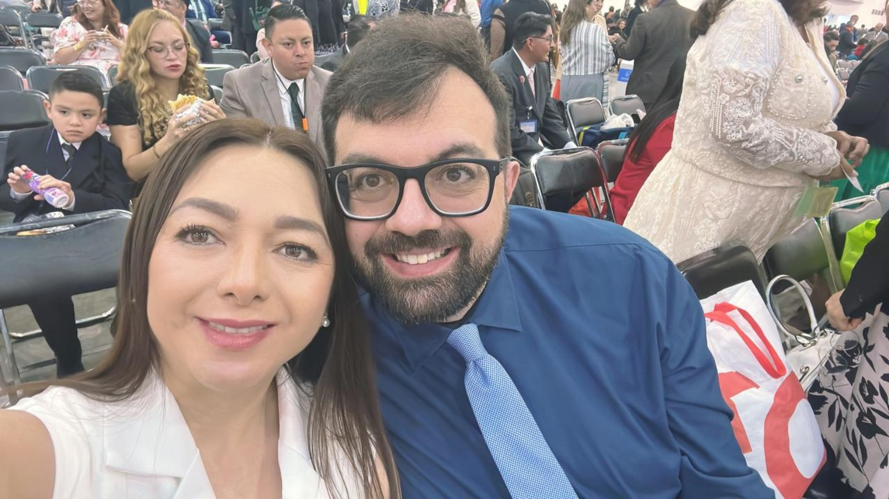

Benvenuti / Bienvenidos
Con gioia desideriamo condividere con voi il cammino che ci porterà al nostro matrimonio. Questo sito sarà il nostro punto di riferimento prima, durante e dopo il matrimonio.
Con alegría queremos compartir con ustedes el camino hacia nuestra boda. Este sitio será nuestro punto de referencia antes, durante y después de la boda.
Galleria iniziale
Alcune immagini che raccontano l'inizio del nostro cammino.



Dettagli / Detalles
📅 Data: 16 febbraio 2028
📍 Zona: Chiapas, Messico
💒 Luogo della cerimonia: da confermare
Programma indicativo
Viaggio e informazioni
Conferma presenza / Confirmación
Compila il modulo per aiutarci a organizzare hotel, trasferimenti e ricevimento. Le risposte saranno raccolte nella sezione Forms di Netlify.
Apri WhatsApp per chiarimenti
Dopo il matrimonio: i nostri ricordi
Dopo il matrimonio questa sezione diventerà il nostro album digitale. Qui potremo inserire foto, video, momenti della cerimonia, ricevimento e messaggi degli invitati.